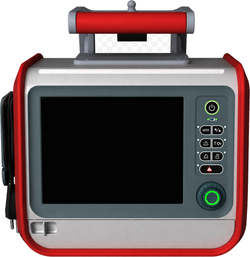
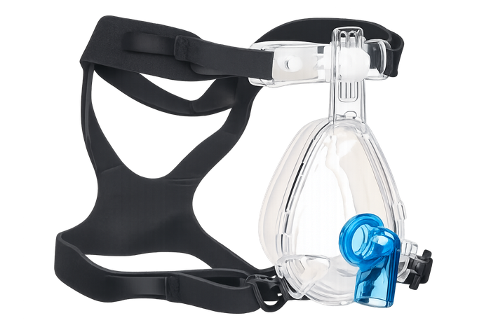
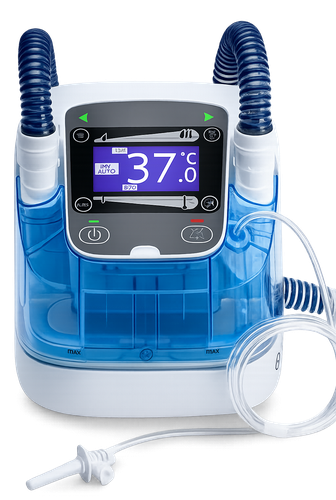
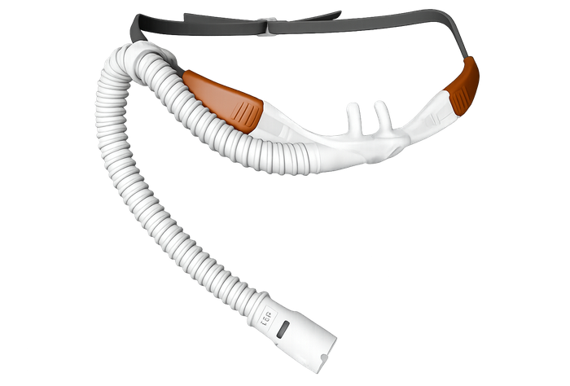
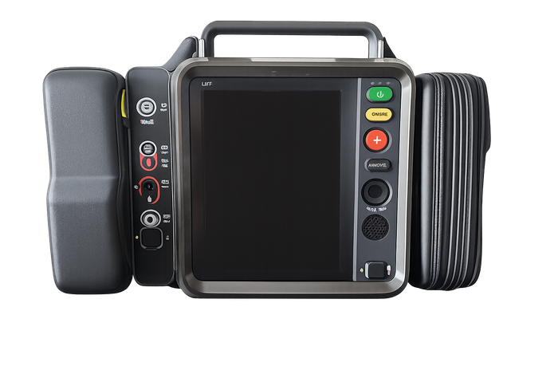

Hamilton T1 Initial Setup & PreOp Checks
Circuit assembly, leak testing, flow-sensor calibration, and initial readiness checks.
Setup Guides & Training Videos
Clinical Reference Materials Supporting Transport Planning
Six setup guides and six training videos organized by clinical category.
Hamilton T1 preparation and intubated-patient setup.

Circuit assembly, leak testing, flow-sensor calibration, and initial readiness checks.
Patient-height entry, (S)CMV+ selection, ventilator settings, and connection to the ETT.
Standard and heated-humidified BiPAP/CPAP setup.

Non-vented mask selection, NIV-ST mode, pressure settings, patient connection, and leak management.

Dual-limb circuit preparation, H900 humidifier setup, sterile-water chamber, and NIV configuration.
Adult and pediatric HFNC setup with Hamilton T1 and H900.

Adult and pediatric equipment, H900 circuit setup, high-flow mode, cannula selection, and patient fitting.
LifePak 35 invasive pressure monitoring preparation and setup.

Pressure-line preparation, transducer positioning, monitor connection, zeroing, and waveform confirmation.